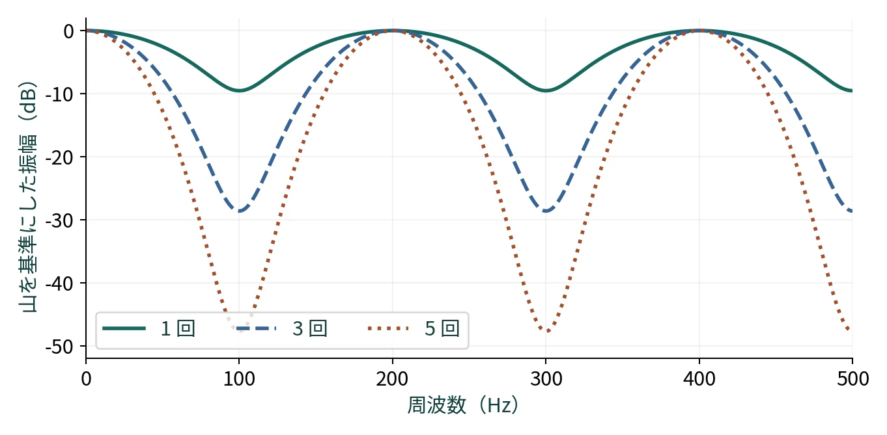

第45章 部屋に声を返すと、建築が作曲を始める
ルシエ《I Am Sitting in a Room》を、部屋の周波数応答の繰り返しとして計算する。
この章で学ぶこと
- 再録音の反復を H(f) の N 乗として表す
- 一回の反射が作る櫛形の山と谷を計算する
- 定在波と反射という二つの仮説を、測定位置を動かして切り分ける
子音が消えたあと、何の時刻が残るか
アルヴィン・ルシエ《I Am Sitting in a Room》の1980年録音を開く。初めに、一人の声が収録の仕方を説明する。次に、同じ声を部屋でスピーカーから鳴らして再録音する。さらにその録音を再生して録り直す。レーベルの記録によれば、この版はコネティカット州ミドルタウンの作曲者宅で制作された32世代の録音から成る。まず冒頭の一文で息継ぎを一か所決める。中盤以降に、同じ長さの空白を見つけられるだろうか。単語を聞き取れる時間と、発話のリズムを予測できる時間は一致するだろうか。
これは、部屋の性質を素材にしながら、自分の声がどのように変わるかを人前で時間をかけて示す作品でもある。ルシエ自身の発話の揺れが初期の各世代を形づくる。特定の子音が聞こえにくくなる時刻に唯一の正解はない。同じ世代でも、初めに原文を聞いて覚えた聴者と、その世代から初めて聞く聴者とで、言語としての聞こえ方を比べることができる。
反復が選ぶ周波数を計算する
部屋の条件、スピーカーとマイクの位置、両者の設定を固定する。この鎖を近似的に線形かつ時不変とし、直接音・反射・機材の応答をすべて含むインパルス応答を と書く。インパルス応答とは、ごく短い単位入力を与えた後に、ある受音点へどんな時間差と強さで音が現れるかを記録したものだ。元の音を 、一度再生・再録音した音を とする。重ね合わせが成り立つので 。星印はデジタル信号処理の章で導いた畳込みである。
周波数 における振幅と位相をまとめた複素数が 、元の録音に対する値が なら、一度の再録音で 。 回で となる。証明は帰納法で、 回の式に左から を掛ければ次の式を得る。各世代で全体に同じ利得を掛けても、同じ世代の二周波数間の振幅比では相殺される。ある周波数で初期値が完全にゼロなら、理想的な線形モデル内では反復してもそこは無音のままである。再録音で新しい音が浮かぶように聞こえることと、元の信号になかった周波数が生成されることは区別できる。
反射が一回だけの建物を作る
壁までの往復で直接音より 秒遅れる反射を一つだけ作り、その振幅比を とする。直接音の振幅を1とすれば
は虚数単位。後半の式は複素共役を掛けて得られる。、 秒なら、0、200、400 Hzで山の高さが1.5となり、100、300、500 Hzで谷の高さが0.5となる。山は一度の反射による同位相加算、谷は逆位相の部分的な相殺から生じる。山を1にそろえて表示すると、谷の比は一回で 、五回で 。振幅比をデシベルで表すと dBになる。

実装するなら標本化周波数を48,000 Hzとし、 サンプルだけ前のデータを加える。各回で「入力をコピーする」「出力の240サンプル目以降に、入力を240サンプル遅らせ半分の大きさで加える」の順で計算する。末尾の反射まで残したいなら、先に出力を入力より240サンプル長く用意する。入力側を順次書き換えながら同一配列内で足していくと、追加した音が次の入力に流れ込む。そうすると一回の処理が多重反射になる。再録音の「一世代」の定義が実装によって変わる具体例である。
定在波と、壁からの一回の反射
長さ の平行な剛壁に挟まれた空気柱では、壁に垂直な空気の速度が両端でゼロになる。線形な音場では対応する音圧の空間微分がゼロであり、気圧変動の空間分布に を使える。添字 に対し波数は 、音速を とすれば だ。長さ4.0 m、 m/sなら最低の長さ方向モードは42.9 Hz。壁の近くではこのモードの音圧の絶対値が大きく、中央ではゼロに近い。スピーカーを固定したままマイクを中央に移動すれば、同じ部屋でも測定されたピークが弱まるという予想になる。実室には他方向のモードと表面の吸音もあるので、特定の周波数で測定値が厳密にゼロになるとは限らない。
ここで前節の200 Hz間隔を、部屋の長さが決める固有振動と読み替えると何が起きるか。前節のモデルは直接音と一回の反射の経路差を与えただけで、二壁間に何往復も閉じ込める条件がない。音源・マイクの移動が経路差を変えれば、櫛状の谷の間隔も動く。他方、理想室の固有振動数は受音位置を動かしても変わらず、その見え方が変わる。観測点を動かすという一つの操作で、二つの原因仮説を切り分ける足掛かりが得られる。
自分の声で実現するスコア
- 二秒ほどの短い発話を録音し、無言の間を一か所残す。その無音区間の開始時刻を記す。
- 前節の二経路モデルで、一・三・五世代のファイルを別々に作る。各ファイルで最大絶対振幅を同じ値へ規格化し、聞き比べる。乾いた単語を一度聴く組と、最後の世代から始める組とで、聞き取れた子音を記す。
- 次にOpenAIRの実測インパルス応答に替え、一世代だけ作る。データに記された音源・受音点とチャネルを控える。応答の後尾を途中で切った版も作り、無言の間を埋める響きがどう変わるかを聴く。
やってみよう
問いと解答例。 反復後に200 Hzが卓越した。それだけで実際の部屋の長さを mと算定できるか。上の二経路モデルでも200 Hzが強くなるうえ、声の声帯振動やスピーカーの特性も記録に入るため一意に決まらない。部屋と機材を固定して音源信号を替える実験と、信号を固定して測定点を動かす実験を別々に行う。前者で強調が再現し、後者でピークの場所または高さがどう動くかを観察する。建物を楽器の一部に数えるとき、演奏者の仕事には音を出す行為のほかに、どこに立つかを決める行為も入る。
ここだけ押さえる
- 反復は元の音にない周波数を作らず、すでにある成分どうしの比を変える。
- 5 ms 遅れの反射は 200 Hz 間隔の山を作る。
- 建物を楽器にするとき、どこに立つかも演奏の一部になる。
この章の資料
- Alvin Lucier／Lovely Music・録音本編と制作ノート — 1980年の32世代版。息継ぎの区切りを覚え、言葉と持続音の境を探す。
- MoMA・収蔵と再演の記録 — 美術館での実現を作曲者宅の版と比較する。スコアを保存することと、会場固有の音を保存することの差を考える。
- University of York・OpenAIR — 測定・モデルによるインパルス応答と無響素材の公開プロジェクト。
- Foteinou・Murphy・聖マーガレット教会の多点測定 — 同じ空間でも、測定位置ごとの違いを平均一つで表せるかを調べた実例。音源と受音点の配置図を最初に見る。